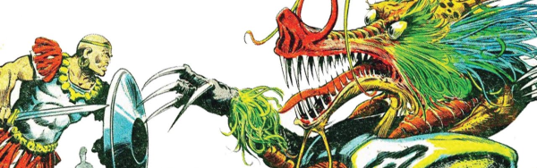

In Tornado, this starts off as a sort of mystical Spartacus meets The Dirty Dozen, as a nubian warrior leads a special Roman cohort accompanied by his familiar (and literal) black hawk. As Tornado was folded into 2000 AD, our hero (minus the hawk) was teleported into space with the accompanying explanatory tagline: "Once a Roman centurion - now gladiator in a savage alien arena!"
The original set-up in Tornado probably served as inspiration for the much later Aquila.
Art by Massimo Belardinelli
| [Tornado Segment - historical fantasy] | |||||||||
| Story Title | Parts | Pages | w indicates a wraparound coverCovers | Year(s) | Issues | Writer | Artist | Colourist | Letterer |
|---|---|---|---|---|---|---|---|---|---|
| [Legion of the Damned] | 3 | 13 | 4: Alfonso Azpiri 1 | 1979 | T4-T6 | Gerry Finley-Day | Alfonso Azpiri | [b&w] | unknown |
| [Forest of Death] | 2 | 9 | 0 | 1979 | T7-T8 | Gerry Finley-Day | Alfonso Azpiri | [b&w] | unknown |
| [The Heights of Hazda] | 2 | 9 | 0 | 1979 | T9-T10 | Gerry Finley-Day | Alfonso Azpiri | <-- 2pp, [b&w] | unknown |
| [Britain] | 9 | 43 | 0 | 1979 | T11-T19 | Gerry Finley-Day | Alfonso Azpiri | <-- 16pp, [b&w] | unknown |
| [Return to Rome] | 3 | 13 | 0 | 1979 | T20-T22 | Gerry Finley-Day | Alfonso Azpiri | [b&w] | unknown |
| [The Stadium - action sci-fi] | |||||||||
| [The Challenge] | 2 | 10 | 0 | 1979 | 127-128 | Kelvin Gosnell Alan Grantvarious | Massimo Belardinelli | [b&w] | Tom Frame: 1 Peter Knight: 2 various |
| [Battak] | 2 | 10 | 0 | 1979 | 130-131 | Kelvin Gosnell Alan Grantvarious | Massimo Belardinelli | [b&w] | Peter Knight |
| The Kraakhan Fear-Beast | 1 | 5 | 0 | 1979 | 132 | Kelvin Gosnell Alan Grantvarious | Ramon Sola | [b&w] | Peter Knight |
| [Zog] | 1 | 5 | 0 | 1979 | 133 | Kelvin Gosnell Alan Grantvarious | Joe Staton | [b&w] | Jack Potter |
| [Goool] | 2 | 10 | 0 | 1979 | 134-135 | Kelvin Gosnell Alan Grantvarious | Massimo Belardinelli | [b&w] | Jack Potter |
| [Ghordle Mardle] | 1 | 5 | 0 | 1979 | 136 | Kelvin Gosnell Alan Grantvarious | Massimo Belardinelli | [b&w] | Jack Potter |
| [Captain Psyko] | 3 | 15 | 137: Massimo Belardinelli 1 | 1979 | 137-139 | Kelvin Gosnell Alan Grantvarious | Massimo Belardinelli | [b&w] | Jack Potter: 1 Steve Potter: 2 Peter Knight: 3 various |
| Warrior in Search of his Soul | |||||||||
| [Silversun] | 3 | 13.5 | 142: Massimo Belardinelli 1 | 1979 | 140-142 | Kelvin Gosnell Alan Grantvarious | Massimo Belardinelli | [b&w] | Peter Knight |
| [Ursa & Zog] | 2 | 8 | 0 | 1979 | 143-144 | Kelvin Gosnell Alan Grantvarious | Ramon Sola | [b&w] | Peter Knight |
| [The Quest] | 7 | 29 | 149: Massimo Belardinelli 1 | 1979-1980 | 145-151 | Kelvin Gosnell Alan Grantvarious | Massimo Belardinelli | [b&w] | Peter Knight |
| [The Soul-Sucker] | 9 | 36 | 0 | 1980 | 152-160 | Kelvin Gosnell Alan Grantvarious | Massimo Belardinelli | [b&w] | Tony Jacob: 1 Peter Knight: 2‑9 various |
| The Final Chapter | 1 | 4 | 0 | 1980 | 161 | Kelvin Gosnell Alan Grantvarious | Massimo Belardinelli | [b&w] | Peter Knight |
| [Specials] | |||||||||
Set during the Britain segment.[The Druid's Curse] | 1 | 5 | Geoff Campion 1 | 1980 | TA'81 | unknown | unknown | <-- | unknown |
Set during the Stadium segment.The Longest Walk | 1 | 5 | 0 | 1982 | SFS5 | Alan Grant | Joe Staton | [b&w] | Peter Knight |
From Storm WarningBlack Storm | 1 | 8 | 0 | 2020 | SFS25 | John Reppion | Clint Langley | <-- | Jim Campbell |
++ADDITIONAL CONTENT++ >> Text Stories << | |||||||||
No supertitle. Subtitled: "A Blackhawk Story". Set during the Stadium segment. Death-Dive | 1 | 4 | 0 | 1980 | 2KA'81 | unknown | Massimo Belardinelli | [b&w] | n/a |
Set during the Stadium segment.The Challenge | 1 | 5 | 0 | 1981 | 2KA'82 | unknown | Reprints. Massimo Belardinelli | [b&w] | n/a |
| >> Posters << | |||||||||
Star Pin‑Up. Including Ursa's Song.Ursa | 1 | 1 | 0 | 1979 | 137 | n/a | Wyatt | <-- | n/a |
| >> Features << | |||||||||
| Fact-File: Ursa and Zog | 1 | 1 | 0 | 1980 | 2KA'81 | editorial | Massimo Belardinelli | [b&w] | n/a |
| year | episodes | pages |
| 1977 | 0 | 0 |
| 1978 | 0 | 0 |
| 1979 | 37 | 173.5 |
| 1980 | 17 | 69 |
| 1981 | 0 | 0 |
| 1982 | 1 | 5 |
| 1983 | 0 | 0 |
| 1984 | 0 | 0 |
| 1985 | 0 | 0 |
| 1986 | 0 | 0 |
| 1987 | 0 | 0 |
| 1988 | 0 | 0 |
| 1989 | 0 | 0 |
| 1990 | 0 | 0 |
| 1991 | 0 | 0 |
| 1992 | 0 | 0 |
| 1993 | 0 | 0 |
| 1994 | 0 | 0 |
| 1995 | 0 | 0 |
| 1996 | 0 | 0 |
| 1997 | 0 | 0 |
| 1998 | 0 | 0 |
| 1999 | 0 | 0 |
| 2000 | 0 | 0 |
| 2001 | 0 | 0 |
| 2002 | 0 | 0 |
| 2003 | 0 | 0 |
| 2004 | 0 | 0 |
| 2005 | 0 | 0 |
| 2006 | 0 | 0 |
| 2007 | 0 | 0 |
| 2008 | 0 | 0 |
| 2009 | 0 | 0 |
| 2010 | 0 | 0 |
| 2011 | 0 | 0 |
| 2012 | 0 | 0 |
| 2013 | 0 | 0 |
| 2014 | 0 | 0 |
| 2015 | 0 | 0 |
| 2016 | 0 | 0 |
| 2017 | 0 | 0 |
| 2018 | 0 | 0 |
| 2019 | 0 | 0 |
| 2020 | 1 | 8 |
| 2021 | 0 | 0 |
Comic strip data (excludes other content):